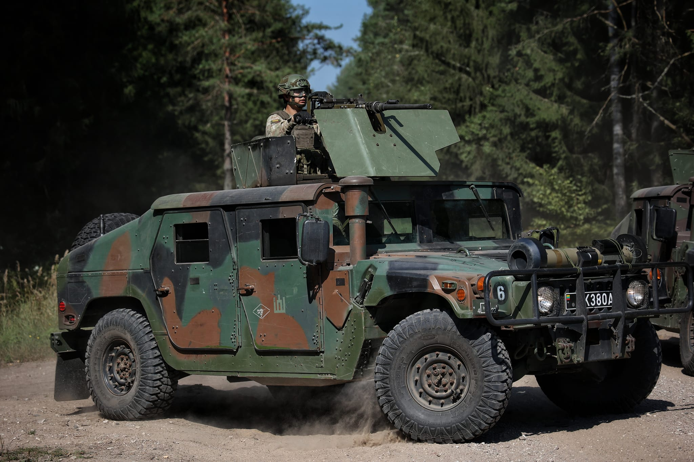
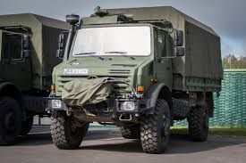

Naudojama transporto priemonė kariuomenėje
Lietuvos kariuomenė naudoja įvairius karinę paskirtį atitinkančius automobilius – nuo lengvųjų visureigių iki sunkiosios technikos. Jie užtikrina greitą judėjimą, karių saugumą ir efektyvią operacijų vykdymo galimybę.
JLTV

Modernus amerikietiškas karinis visureigis, naudojamas greitam karių ir įrangos judėjimui. JLTV pasižymi puikia apsauga nuo minų ir improvizuotų sprogstamųjų įtaisų, o jo mobilumas leidžia veikti sudėtingose vietovėse.
Humvee
Patikimas ir universalus visureigis, naudojamas patruliavimui, transportavimui ir taktikos pratyboms. Humvee yra ilgaamžis, lengvai pritaikomas įvairioms misijoms ir plačiai naudojamas NATO pajėgose.
Unimog
Vokiškas sunkusis sunkvežimis, skirtas įrangos, krovinių ir karių transportavimui. Unimog turi didelį pravažumą sudėtingoje reljefo vietovėje ir patikimą mechaniką.
Mercedes-Benz G klasė (visureigis)
.jpg)
Lengvas visureigis, naudojamas vadovų ir specialių padalinių transportavimui. Mercedes G klasė pasižymi aukštu patikimumu ir komfortu karinėse operacijose.